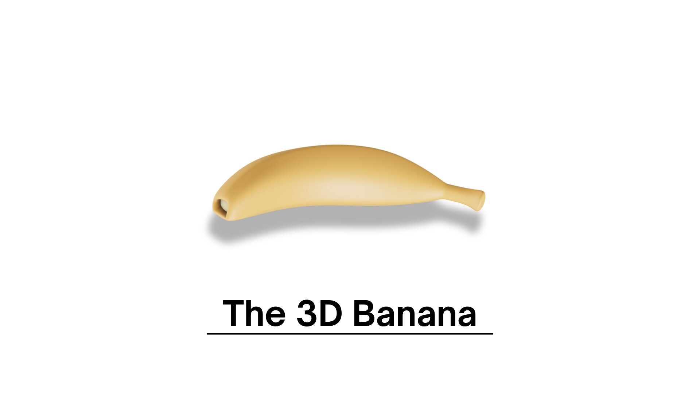

Project Overview
The 3D Banana is a traditional drawing activity completed for CEEL 301 Graphics Design. The activity focuses on illustrating a banana while creating the appearance of depth and dimension.
Drawing Concept
Colored pencils and shading techniques are used to represent the banana's shape, surface, and three-dimensional appearance.
Techniques Applied
- Traditional hand drawing
- Colored-pencil rendering
- Shading and tonal variation
- Shape and form representation
- Creating the appearance of dimension
What I Learned
This activity helped me understand how shading and tonal differences can make a flat drawing appear more realistic and three-dimensional.
Final Artwork
Original three-dimensional banana drawing.
